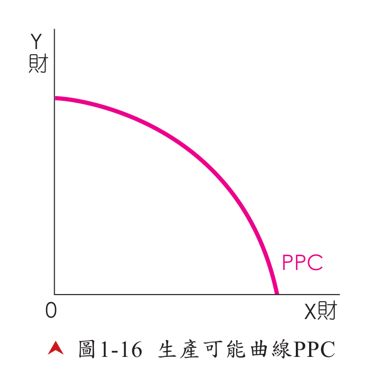
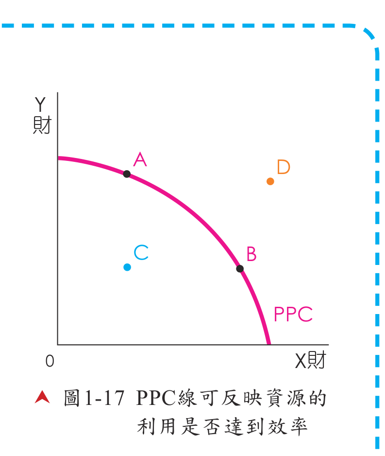
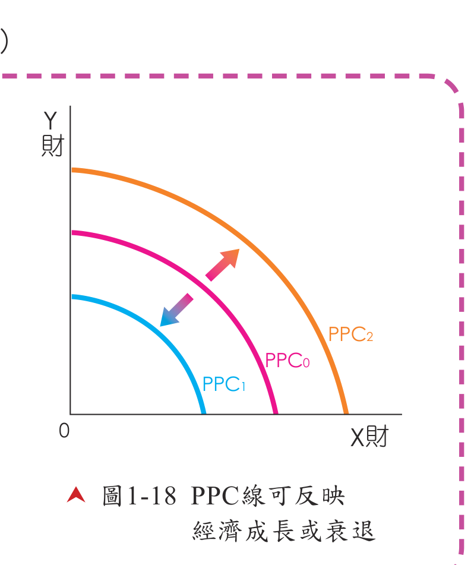
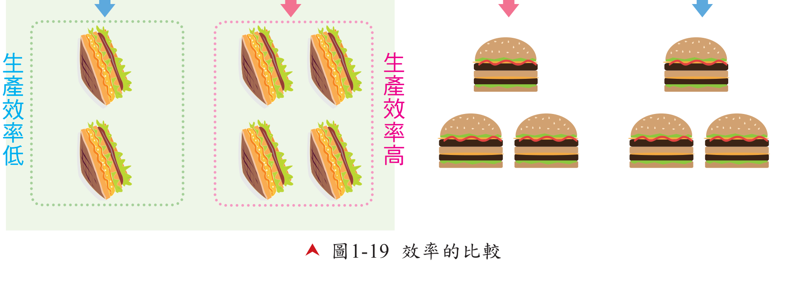
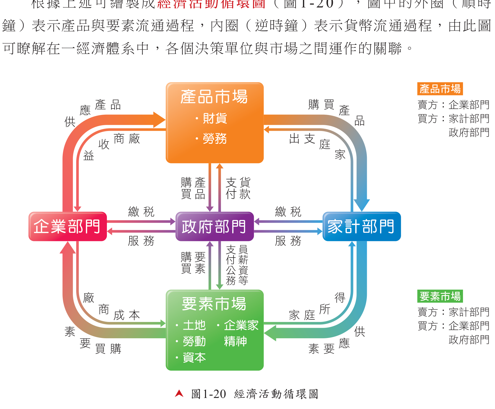
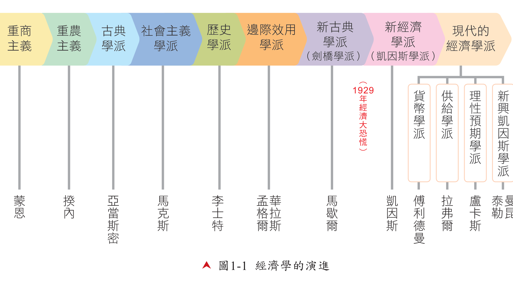
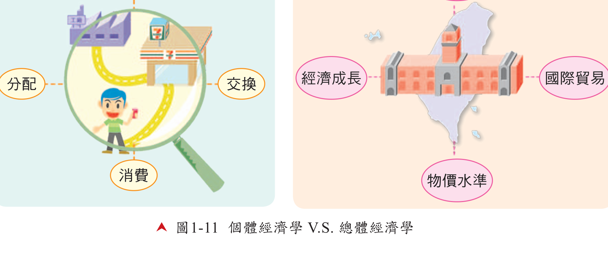
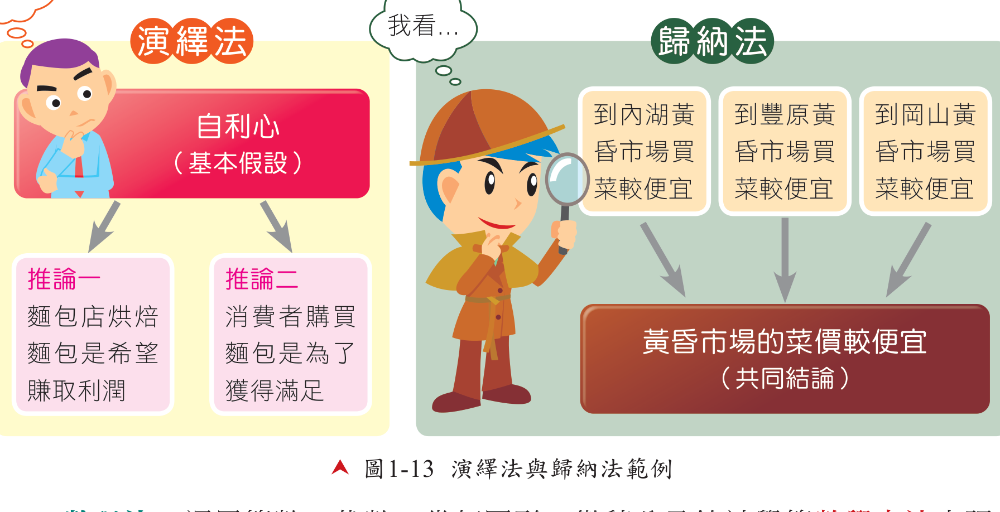

🌟 經濟學的總源頭：六大基本經濟問題（課本 P.4～5）
慾望無窮、資源有限是一切選擇的起點。點擊下方任一問題，看它如何導出整本經濟學各章節！
📘 個體經濟學：前四大問題（4W）
由「市場價格機能（看不見的手）」解決
一、生產什麼？（What）
導出 CH2、CH3
資源有限，應生產哪種財貨才能滿足消費者迫切需求？傳統產業或高科技？
二、如何生產？（How）
導出 CH4、CH5
廠商為求最大利潤，該多買機器人代替員工，還是聘用高生產力員工？要素比例如何搭配？
三、何時生產？（When）
導出 CH6 ～ CH9
廠商應在何時推出新產品、何時進入市場或歇業？在各種市場結構下如何競爭定價？
四、為誰生產？（For whom）
導出 CH10 ～ CH12
生產的財貨由誰消費、生產所得如何分配？工資、地租、利息與利潤如何決定？
🏛️ 總體經濟學：後兩大問題
由「政府宏觀經濟政策」解決
五、如何維持經濟穩定？
導出 CH13～16, CH18
一國物價劇烈波動或失業太多將打擊民生。政府如何透過貨幣政策與財政政策穩定經濟？
六、如何促進經濟成長？
導出 CH17、CH19
如何創新技術、增加產能、拓展國際貿易、兼顧環保與發展，提升人民所得與生活品質？
點擊上方問題查看章節脈絡
📌 模組一：資源稀少性、財貨四大分類 ＆ 經濟原則
課本 1-2 & 1-3 節 ｜ 統測高頻名詞考點
🔥 核心本質：「慾望無窮，資源有限（相對稀少）」➔ 面對有限資源必須進行「選擇」➔ 選擇伴隨代價（機會成本）➔ 誕生經濟學！
• 經濟行為： 人類為了滿足生活慾望，利用有限資源所進行的一切生產、分配、交換與消費之謀生活動。
• 經濟原則： 以最小的代價獲取最大的滿足（最大滿足），或以一定的代價獲取最大的效果。
• 經濟行為： 人類為了滿足生活慾望，利用有限資源所進行的一切生產、分配、交換與消費之謀生活動。
• 經濟原則： 以最小的代價獲取最大的滿足（最大滿足），或以一定的代價獲取最大的效果。
課本 1-3-3 財貨的四大維度完整分類表（課本 P.8～9）
| 分類維度 | 財貨種類 | 定義特徵與代價 | 課本典型實例與考題重點 |
|---|---|---|---|
| 1. 依「取得途徑」區分 | 自由財 （Free Goods） |
又稱無償財。大自然恩賜，供應量充裕，無須支付任何代價（P ＝ 0）。 | 陽光、空氣、雨後的彩虹、海水。（經濟學通常不研究無償財） |
| 經濟財 （Economic Goods） |
又稱有償財。數量有限具相對稀少性，必須支付代價（P ＞ 0）才能取得。 | 自來水、衣服、漢堡、手機、球鞋。（經濟學討論的主角） | |
| 2. 依「使用用途」區分 | 消費財 （Consumption Goods） |
以消費為目的（不再作為生產用途），直接滿足消費者慾望之最終財貨。 | 零食、飲料、雜誌、演唱會票券。 |
| 資本財／生產財 （Capital Goods） |
以生產為目的，用來生產消費財的財貨，僅能「間接」滿足消費者慾望。 | 廠商廠房、機器設備、原料、半成品。 ★ 課本經典陷阱題： 總舖師在家煮飯給家人用的鍋子是「消費財」；但餐廳營業營業用的鍋子則是「資本財」！ |
|
| 3. 依「耐用長短」區分 | 非耐久財／消耗財 （Nondurable Goods） |
只供一次使用或短期使用即會消耗掉的財貨。 | 食物、洗髮精、牙膏、修正帶、衛生紙。 |
| 耐久財 （Durable Goods） |
可供長期使用或反覆多次使用的財貨。 | 房屋、汽車、電冰箱、咖啡機、收銀機、冷氣機。 | |
| 4. 依「使用特性」區分 | 私有財 （Private Goods） |
由使用者獨享，具備排他性與互斥性。 | 自己的衣服、私人手機、自購手搖飲。 |
| 公共財 （Public Goods） |
大家都能共享，無法排除他人使用，具共享性。 | 路燈、國防、國家公園、治安警力。 |
- 選擇的科學： 經濟學是一門研究在資源相對稀少下如何進行最適選擇的社會科學。
- 價格機能（看不見的手）： 亞當斯密於 1776 年《國富論》提出，市場中個別買者追求效用極大、賣者追求利潤極大，透過供求雙方的價格訊號，自然解決前四大經濟問題（4W）！
📈 模組二：解決 4W 的核心工具 —— 機會成本 ＆ 生產可能曲線（PPC）
課本 1-6 節 ｜ 統測計算圖形核心1. 機會成本（Opportunity Cost）的衡量

▲ 教科書 P.21 圖 1-14：阿振選擇工作的機會成本（放棄的最高價值）
⚡ 機會成本鐵則：
當資源面臨多種用途時，選擇其中一種用途，所必須放棄其他用途中「價值最高者」（非全部相加）！
當資源面臨多種用途時，選擇其中一種用途，所必須放棄其他用途中「價值最高者」（非全部相加）！
- 實例： 阿振面臨三份工作機會：甲公司月薪 4 萬、乙公司月薪 3.5 萬、丙公司月薪 3 萬。
• 若阿振選擇去甲公司，其機會成本為「乙公司的 3.5 萬元」（次高者），不是 3.5 ＋ 3 ＝ 6.5 萬！ - 機會成本組成： 外顯成本（實際支付的金錢代價） ＋ 隱含成本（自有要素轉作他用可得之最高代價）。
2. 生產可能曲線（PPC）與邊際轉換率（MRT）

▲ 教科書 P.22 圖 1-15 ＆ 表 1-1：民生財與國防財之生產可能曲線

▲ 教科書 P.24 圖 1-16：生產可能曲線特性（負斜率、凹向原點）
📐 邊際轉換率（MRTXY，PPC 之切線斜率絕對值）：
每增加 1 單位 X 財（民生財），所必須放棄 Y 財（國防財）的數量，即生產 X 財的機會成本！
MRTXY ＝
放棄的 Y 財數量 (ΔY)增加的 X 財數量 (ΔX)
每增加 1 單位 X 財（民生財），所必須放棄 Y 財（國防財）的數量，即生產 X 財的機會成本！
- 特性一：負斜率（向右下方傾斜）： 代表資源有限，要多生產 X 就必須放棄部分 Y（斜率為負，ΔY / ΔX ＜ 0）。
- 特性二：凹向原點： 代表「邊際轉換率 MRT 遞增」，也就是「機會成本遞增法則」（課本註13：直指第 4 章報酬遞減概念）！因為生產要素不具備完全替代性，先用適合生產該財貨的資源，隨產量增加需挪用不適合的資源，成本愈來愈高。
- 統測常考延伸（PPC 形狀比較）：
• 凹向原點： 機會成本遞增（邊際轉換率 MRT 遞增，現實常見）。
• 呈一直線： 機會成本固定（邊際轉換率 MRT 固定，要素具完全替代性）。
• 凸向原點： 機會成本遞減（邊際轉換率 MRT 遞減，極少見）。
3. PPC 線上、線內、線外與平移特徵

▲ 教科書 P.25 圖 1-17：PPC 反映資源利用是否達到效率

▲ 教科書 P.25 圖 1-18：PPC 整條外移（經濟成長）vs 內移（經濟衰退）
| 點位 / 變動 | 代表意義 | 經濟體狀態與原因 |
|---|---|---|
| 在 PPC 線上（如 A、B 點） | 達到生產效率 | 現有資源與技術已充分利用，處於「充分就業」、無閒置浪費狀態。 |
| 在 PPC 線內（如 C 點） | 未達生產效率 | 存在資源閒置、失業或技術無效率，實際產量低於潛在產能。 |
| 在 PPC 線外（如 D 點） | 目前技術無法達到 | 受限於目前資源與科技水準，此組合暫時無法實現。 |
| 整條 PPC 向外移（PPC0 ➔ PPC2） | 經濟成長 | 生產技術進步、生產要素投入量增加（如勞動力擴增、資本積累）。 |
| 整條 PPC 向內移（PPC0 ➔ PPC1） | 經濟衰退 | 重大天然災害、戰爭破壞、人口外流或資源耗竭。 |

▲ 教科書 P.26 圖 1-19：生產效率 vs 配置效率之比較
生產效率 vs 配置效率之分辨
- 生產效率（Production Efficiency）： 只要落在 PPC 線上的任何一點，皆代表資源已充分利用、達到生產效率。
- 配置效率（Allocative Efficiency）： 在 PPC 線上眾多組合中，最符合社會大眾需求與偏好的那一個唯一組合點。
🔄 模組三：市場如何串連經濟 —— 經濟活動循環圖 ＆ 經濟制度
課本 1-7 節
▲ 教科書 P.29 圖 1-20：經濟活動循環圖（點擊可放大）
經濟循環圖之運作雙圈：
- 兩大主角： 家計部門（消費者） ＋ 企業部門（廠商）。
- 兩大市場： 產品市場（商品／財貨與勞務市場） ＋ 生產要素市場（勞動、土地、資本、企業才能）。
- 實物流（實體商品與要素流動，順時針）：
• 家計在要素市場提供要素給廠商；
• 廠商生產財貨在商品市場提供給家計消費。 - 貨幣流（金錢資金流動，逆時針）：
• 家計在商品市場支付消費支出，成為廠商之營業收入；
• 廠商在要素市場支付要素報酬（工資、地租、利息、利潤），成為家計之所得。 - 鐵律： 實物流與貨幣流方向相反，且兩圈金額必然相等！
三大經濟制度完整比較表（課本 1-7-2 節 P.30～31）
| 經濟制度名稱 | 財產所有權 | 經濟決策權歸屬 | 特色、優缺點與代表國家 |
|---|---|---|---|
| 市場經濟制度 （資本主義／自由經濟） |
私有財產權為基礎 | 市場價格機能 （看不見的手）引導 |
• 以自利心為動機，充分保障人民選擇自由。 • 優點： 資源配置效率最高。 • 缺點： 易造成貧富差距過大（「朱門酒肉臭，路有凍死骨」）。 • 代表國家： 美國、英國。 |
| 控制經濟制度 （計畫經濟制度） |
生產工具國有 （公有制） |
中央政府計畫統籌 聽命於政府安排 |
課本進一步區分為兩種體制： 1. 共產主義經濟制度： 生產資源與工具全歸國家，人民無私有財產與選擇自由，資源配置無效率。代表：北韓。 2. 社會主義經濟制度： 以「控制經濟為主、市場經濟為輔」，人民保有部分財產與選擇權，但政府高度控制。代表：中國、古巴。 |
| 混合經濟制度 （Mixed Economy） |
公私財產並存 | 價格機能為主 政府干預為輔 |
• 兼顧市場效率與社會公平（課稅、社福、公用事業）。 • 代表國家： 當前世界絕大多數國家（包括台灣）。 |
🏛️ 模組四：探索這六問的思想史 —— 經濟學演進 ＆ 研究方法
課本 1-4 & 1-5 節
▲ 教科書 P.10 圖 1-1：經濟學演進流程圖（點擊可高清放大）
經濟學派演進必考重點
- 重商主義： 認為金銀即財富，主張政府干預、獎勵出超。
- 重農主義（魁奈 Quesnay）： 主張農業才是唯一生產性部門，強調「自然秩序」，啟發了自由放任思潮。
- 古典學派（1776 年）： 亞當斯密（Adam Smith） 發表《國富論》，被尊稱為「經濟學之父」。主張「看不見的手（價格機能）」引導利己促進公益，倡導自由放任。
- 新古典學派： 馬歇爾（Marshall） 發表《經濟學原理》，建立「個體經濟學之父」地位（供需交叉分析架構）。
- 凱因斯學派： 凱因斯（Keynes） 1936 年發表《就業、利息與貨幣通論》，從「需求面」主張政府擴張支出以解決 1929 年世界大蕭條，被尊為「總體經濟學之父」。

▲ 教科書 P.16 圖 1-11：個體經濟學 vs 總體經濟學對照圖
1. 個體經濟學 vs 總體經濟學
| 比較項目 | 個體經濟學（Micro） | 總體經濟學（Macro） |
|---|---|---|
| 研究對象 | 單一消費者、個別廠商、個別市場 | 整個國家經濟體系的加總表現 |
| 分析重點 | 價格理論（Price Theory） | 所得與就業理論 |
| 探討課題 | 消費者效用、廠商成本利潤、市場定價 | 國民所得（GDP）、失業率、物價通膨、景氣循環 |
| 代表學者 | 馬歇爾（Marshall） | 凱因斯（Keynes） |
▲ 教科書 P.17 圖 1-12：實證經濟學 vs 規範經濟學特徵對照
2. 實證經濟學 vs 規範經濟學
- 實證經濟學（Positive）： 客觀描述事實與因果關係，探討「是什麼（What is）」，不作主觀好壞價值判斷，結論可驗證（如「網購興起帶動紙箱需求增加」）。
- 規範經濟學（Normative）： 涉及主觀的價值判斷與政策評估，探討「應該如何（What ought to be）」，帶有主觀願望（如「政府應該興建社會住宅」）。

▲ 教科書 P.18 圖 1-13：演繹法與歸納法研究思維
3. 演繹法 vs 歸納法
- 演繹法（Deduction，由大到小）： 從假設或一般通則出發，推導出個別事實或定理（由普遍原理推導特定個案）。古典學派常用。
- 歸納法（Induction，由小到大）： 從許多個別事實的觀察與資料收集出發，總結歸納出一般通則或規律。歷史學派常用。
🎯 模組五：CH1 課本精選 5 大經典實戰測驗
課本 P.34～36 原題檢驗1. 【課本 P.34 第 6 題】古人常說：「夕陽無限好，只是近黃昏。」就經濟學財貨分類而言，美景「夕陽」屬於下列哪一種財貨？
🎉 答對了！選 (C)
「夕陽」是大自然賦予的天然資源，不需花費代價即可享受，因此屬於自由財（Free Goods）。
相對地，若需支付代價（價格大於 0）才能取得之物品則稱為經濟財。
「夕陽」是大自然賦予的天然資源，不需花費代價即可享受，因此屬於自由財（Free Goods）。
相對地，若需支付代價（價格大於 0）才能取得之物品則稱為經濟財。
2. 【課本 P.35 第 11 題】在經濟學的研究範疇中，以單一市場的價格為分析核心，因此亦被稱為「價格理論（Price Theory）」的是下列何者？
🎉 答對了！選 (C)
個體經濟學（Microeconomics） 專注研究個別消費者、廠商與單一市場的行為，其核心為價格決定，故稱「價格理論」。
總體經濟學（Macroeconomics） 則研究全國產出、就業與貨幣，故稱為「所得理論」。
個體經濟學（Microeconomics） 專注研究個別消費者、廠商與單一市場的行為，其核心為價格決定，故稱「價格理論」。
總體經濟學（Macroeconomics） 則研究全國產出、就業與貨幣，故稱為「所得理論」。
3. 【課本 P.36 綜合題】立法院激辯：「政府是否應該廣建社會住宅，並以低於市價之租金提供給弱勢家庭？」此爭辯屬於何種經濟學研究範疇？
🎉 答對了！選 (B)
題幹中出現「是否應該」字眼，探討政策的好壞與社會公平，涉及主觀的價值判斷，屬於規範經濟學（Normative Economics）！
若只是客觀陳述「興建社會住宅使周邊租金下降 5%」，則是實證經濟學。
題幹中出現「是否應該」字眼，探討政策的好壞與社會公平，涉及主觀的價值判斷，屬於規範經濟學（Normative Economics）！
若只是客觀陳述「興建社會住宅使周邊租金下降 5%」，則是實證經濟學。
4. 【課本 P.36 第 4 題】伯賢明天要考商概、經濟、會計及統計等四科。若以同樣 1 小時複習，各科可提升之分數預估分別為：商概 15 分、經濟 25 分、會計 20 分、統計 10 分。若伯賢理性決定複習「經濟學」，請問其機會成本為多少分？
🎉 答對了！選 (C)
機會成本是「放棄所有選項中價值最高者」！
伯賢選擇經濟（25 分），所放棄的科目中分數最高的是會計（20 分），因此機會成本就是 20 分，絕對不能將放棄的科目分數全部相加！
機會成本是「放棄所有選項中價值最高者」！
伯賢選擇經濟（25 分），所放棄的科目中分數最高的是會計（20 分），因此機會成本就是 20 分，絕對不能將放棄的科目分數全部相加！
5. 【課本 P.35 第 16 題】生產可能曲線（PPC）通常呈現「負斜率且凹向原點（凸向外側）」的幾何形狀，其根本原因為何？
🎉 答對了！選 (C)
PPC 負斜率是因為「資源有限」；而凹向原點則是因為生產要素不具完全替代性，連續多生產一單位某財貨，必須放棄另一種財貨的數量愈來愈多，即「邊際轉換率 MRT 遞增（機會成本遞增法則）」！
PPC 負斜率是因為「資源有限」；而凹向原點則是因為生產要素不具完全替代性，連續多生產一單位某財貨，必須放棄另一種財貨的數量愈來愈多，即「邊際轉換率 MRT 遞增（機會成本遞增法則）」！